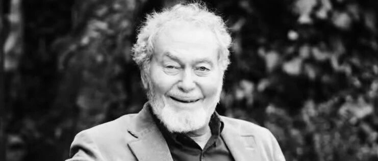

纪念John Michael Rotter教授

Professor J Michael Rotter, FREng, FRSE, FICE, structural engineer and academic. (31 Oct. 1948 - 9 Aug. 2025).
2004年，Rotter教授、陈建飞教授和叶列平教授共同申请的中-英合作课题获批，在该课题的支持下，我有幸得以访问英国爱丁堡大学并见到了Rotter教授。
Rotter教授是非常典型的老派英国绅士风格，优雅、幽默、不急不忙。我和叶列平老师抵达英国后，Rotter教授请我们去了郊外的一个苏格兰小饭店吃晚饭。当时正好是夏天，苏格兰纬度高，天黑得很晚。饭店周围是苏格兰的丘陵和草地，环境非常好。我当时没怎么出过国，也不知道点啥，胡乱点了一个炸鱼排，吃起来感觉就是一个高级一点的Fish & Chips。但Rotter教授很热情地教我点了一杯Gin酒，这也是我第一次喝Gin酒，当时觉得很好喝。后来在英国生活期间，我自己跑到超市去买了一瓶Gin酒，却发现和那天晚上的酒完全不是一个味道，一点都不好喝，最后都拿去炒菜了。
此后和Rotter教授交流科研工作，Rotter教授对论文精益求精的要求和不急不忙的态度是出了名的。有一次Rotter教授拿出了他的博士论文，厚厚的一大本，然后对我说，他博士论文的成果还没有完全发表出来，有两篇论文他仍然觉得有些地方还没有写到十全十美，还需要再改改再投稿。不过他很自信地说，虽然距离他博士毕业已经过去了差不多30年，这些成果放到今天去读仍然具有很好的创新性。这番谈话对当时正忙着写论文攒工分的我产生了巨大的震撼。
在英国期间，我见到Rotter教授的机会不多，听别的老师说，他花了大量时间在欧洲大陆参加相关设计规范的编制。Rotter教授本人是筒仓（Silo）结构的权威专家，据说很多国家的筒仓规范都有他的贡献。Rotter教授曾经提及，当时英国女王的丈夫菲利普亲王有一次来爱丁堡大学视察，他去给亲王讲解他的科研工作。他用透明塑料袋做了一个筒仓的模型，然后里面灌上沙子，再把塑料袋底部剪开，沙子开始流出，塑料袋一下子就凹下去一大块，很好地演示了筒仓的失稳破坏过程，向亲王解释了他研究的内容。这套实验装置虽然简单，但试验成功率高，效果明显。这种“土法上马”的演示实验给了我很好的教学启示。
在合作课题的支持下，Rotter教授也曾数次来清华访问。Rotter教授在日常生活中非常随和而风趣。有一次他带了一个英国学生一起来访，在餐厅吃饭时他给学生解释桌上每道菜。其中有一道菜是甲鱼，Rotter教授可能一时不记得甲鱼这个词怎么说了，于是就在那里用身体和手部动作来比划这是一个什么动物。不知道是不是那个英国学生就没见过甲鱼，虽然Rotter教授用各种动作去说明，但是那个学生就是不明白这是一个什么动物，倒是滑稽的动作把我们逗得哈哈大笑。
Rotter教授是一个非常好的老师、非常好的朋友，但是和他合作写论文真是一番挑战。2004年访问结束后我们就决定一起写一篇论文，当时论文的研究工作基本上都已经做完了，但是论文一直反复修改到2008年才算完成。不过想想他对自己的论文修改了30年还不满意，这篇论文才修改了3年多也就不算啥了。
后来我因为研究方向变化，一直没有机会再见到Rotter教授，只是在网上联系。他一直非常热爱科研，在2021年美国佛罗里达公寓倒塌事故后，我还收到ResearchGate发来的通知，说Rotter教授刚刚阅读了我们关于事故分析的论文。不想今天在朋友圈得知Rotter教授不幸离世，谨以此文纪念这位在我求学阶段指导过我的可敬的前辈学者。

Rotter教授的生平可以参阅他的同事和学生为他写的这篇纪念文章
https://www.scotsman.com/news/people/scotsman-obituaries-professor-michael-rotter-visionary-structural-engineer-and-academic-5286960